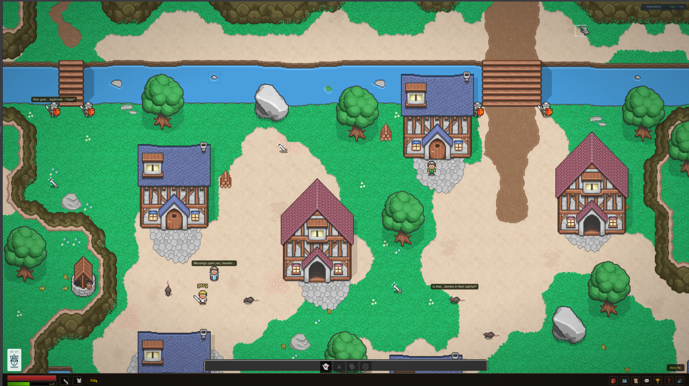
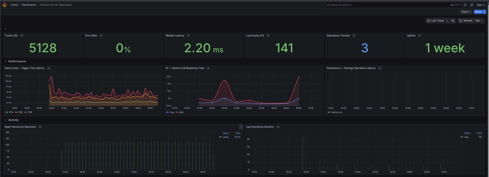
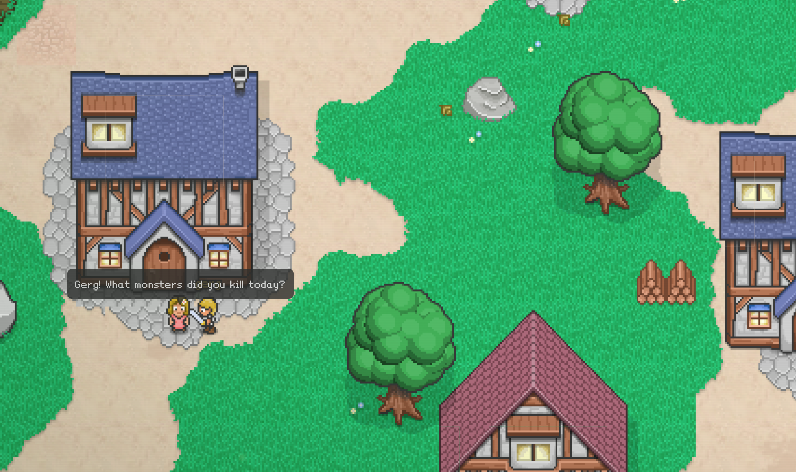
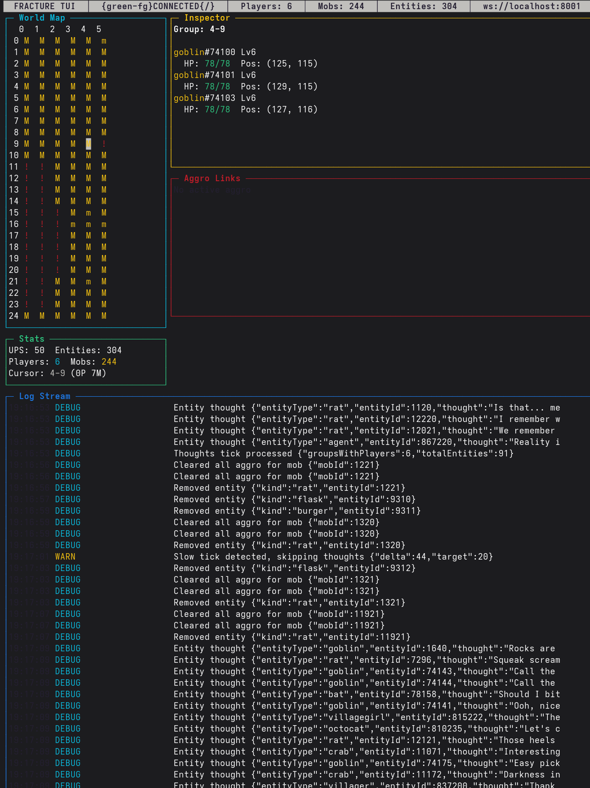

fracture
I took Mozilla's abandoned 2012 BrowserQuest and turned it into a production multiplayer RPG with AI-powered NPCs, distributed tracing, and 3,161 tests.

In 2012, Mozilla and Little Workshop released BrowserQuest, an HTML5 multiplayer demo that proved browsers could handle real-time games. No types. No tests. No persistence beyond localStorage. One massive Player class doing everything from combat to inventory to chat.
It served its purpose and was abandoned. I picked it up and asked: what would it take to turn this into something you'd actually ship?
BrowserQuest (2012)
- No type safety: everything was
any - No tests. Zero.
- No persistence. Die, refresh, start over.
- No observability.
console.logor nothing. - God classes.
Playerhandled everything. - No security. Client-trusted positions.
Fracture (2026)
- TypeScript strict mode. Every message typed.
- 3,161 tests across 65 files. Zero failures.
- SQLite persistence. Resume where you left off.
- OpenTelemetry + Pino + SigNoz + Grafana.
- SRP decomposition. 14 handler modules.
- Rate limiting, input validation, server authority.
decomposition
The Player class had grown to 1,742 lines handling over a dozen concerns. I extracted each into its own module:
| Module | Responsibility |
|---|---|
combat/ | Aggro policy, combat tracker, kill streaks, nemesis system |
player/ | MessageRouter + 14 handler modules |
world/ | Spatial manager, spawn manager, game loop |
storage/ | SQLite persistence layer |
inventory/ | Item management and serialization |
zones/ | Zone boundaries, bonuses, level scaling |
party/ | Invite, XP sharing, proximity tracking |
rifts/ | Endgame dungeons with stacking modifiers |
Post-refactor, Player is 726 lines. Systems communicate through a typed EventBus, not direct method calls. Combat doesn't know about achievements. The narrator doesn't know about inventory.
testing
3,161 tests across 65 test files with zero failures. Statement coverage by module:
- Party, Shop, Zones, Events: 100%
- Rifts: 98%
- Equipment, Inventory: 97-100%
- Storage: 76%
- Player (aggregate): 75%
Storage tests use in-memory SQLite, no mocks pretending to be a database. Coverage thresholds enforced in CI. Tests run on Node 20 and 22.
observability
All console.log calls replaced with Pino structured logging. OpenTelemetry distributed tracing on every message handler, database call, and AI request.
const span = tracer.startSpan(`player.message.${type}`);
// every database call
const span = tracer.startSpan('storage.saveCharacter');
// every AI call with latency tracking
const span = tracer.startSpan('ai.venice');
Logs and traces are correlated. Every log line carries a trace_id and span_id. Self-hosted SigNoz backed by ClickHouse, with public Grafana dashboards.

AI in the product
NPC dialogue
Every NPC generates contextual responses via Venice AI (llama-3.3-70b). The village priest talks about "the time before the sky broke." The guard asks where you came from. Conversations have memory.
entity thoughts
Mobs display visible AI-generated thought bubbles. Rats think about cheese. Skeletons scheme about revenge. 25% AI-generated, 75% template-based, refreshed on a 5-minute cycle.
narrator system
Zone-specific narrative voices describe events with unique vocabularies. Deaths are mourned. Achievements are celebrated. Voice synthesis via Fish Audio TTS.
graceful degradation
If Venice goes down, the game keeps running with static fallbacks. Circuit breaker opens after 5 failures, recovers automatically. AI enhances the experience; it never blocks it.

AI as development partner
Claude was a development partner throughout this project. I made every architectural decision: SRP decomposition, event-driven communication, OpenTelemetry over custom metrics. AI didn't make those calls; 25 years of experience did. But AI let me execute those decisions at a pace that was previously unthinkable.
Migrating every console.log call to structured logging with proper context? Writing 3,161 tests? Extracting 14 handler modules from a monolithic class? This is work that matters but takes forever alone. AI compressed weeks into days.
Not "AI wrote my code." More like "AI enables one engineer to do what used to take a team."
the stack
| Layer | Technology |
|---|---|
| Client | HTML5 Canvas, TypeScript 5.8, Webpack 5 |
| Server | Node.js, TypeScript 5.8, Socket.IO 4 |
| Database | SQLite (better-sqlite3) |
| AI | Venice AI (llama-3.3-70b), Fish Audio TTS |
| Observability | OpenTelemetry, Pino, SigNoz, Grafana, ClickHouse |
| Testing | Vitest 4, v8 coverage, CI on Node 20 + 22 |
| Production | nginx, Let's Encrypt SSL, Docker Compose |
~215 TypeScript source files. 280 including tests. 105 WebSocket message types. 50 levels, 7 zones, 6 roaming bosses, a nemesis system where mobs track grudges and power up against players who've killed them before.
